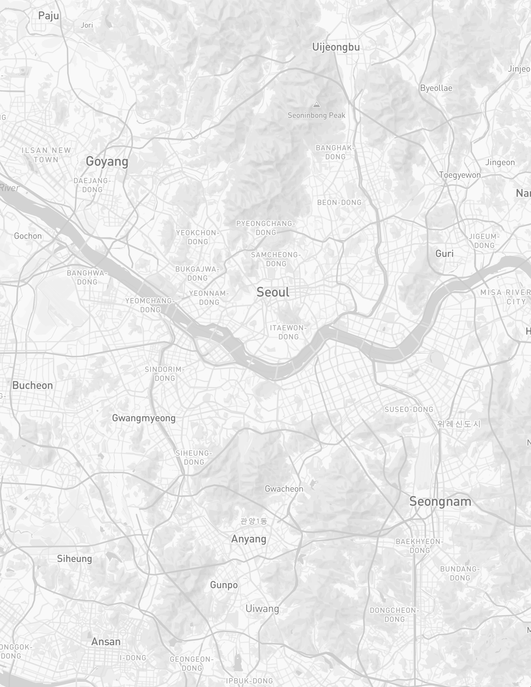
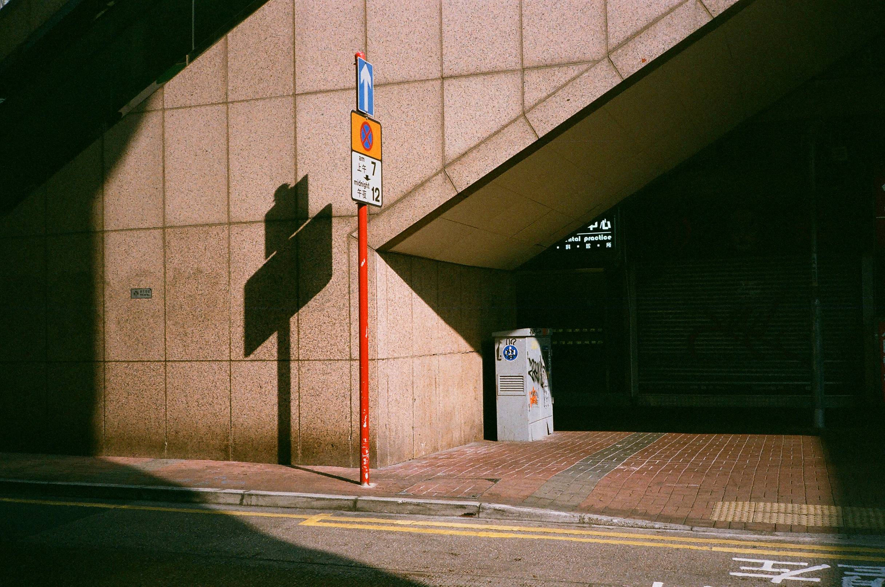
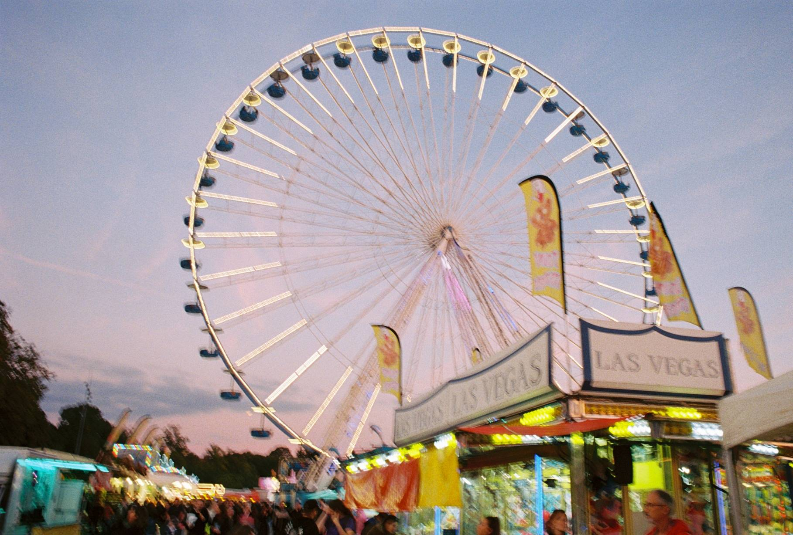
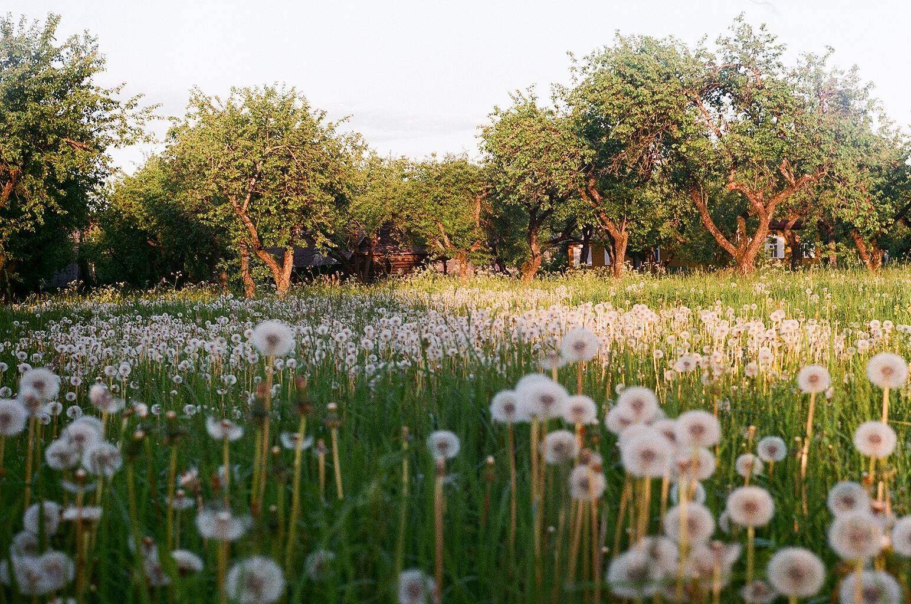

01
DEVELOPING & SCANNING
마지막 셔터를 누르셨나요? 밤하늘 아래 빛나는 수거함에 필름을 넣는 법부터, 당신의 폰으로 스캔본이 도착하기까지의 친절한 여정.
Read moreFrom Shutter to Print.
We keep your analog moments alive, anytime and anywhere through our film booth
당신의 평범한 일상에 아날로그의 온도를 더하는 가장 쉽고 빠른 방법
AUTOMATIC FILM MACHINE & DEVELOPING
필름이 가진 특유의 결을 소중히 여기는 분들을 위해 준비했습니다. 진정한 가치는 속도가 아닌 깊이에서 온다는 것을 아는 사람들을 위해. 사진을 찍는 행위는 단순히 셔터를 누르는 것을 넘어, 기억을 손으로 만질 수 있는 형태로 간직하는 의미 있는 경험입니다. 가장 가까운 자판기에서 필름을 만나거나, 당신의 소중한 롤을 전문 현상소에 맡겨보세요.
마지막 셔터를 누르셨나요? 밤하늘 아래 빛나는 수거함에 필름을 넣는 법부터, 당신의 폰으로 스캔본이 도착하기까지의 친절한 여정.
Read more햇살을 머금은 여름을 가장 정직하고 선명하게 담아냅니다. 파란 바다의 생동감과 구름의 입체감을 울트라맥스 400에 깊게 스며들게 해보세요.
Read more여름의 청량함을 담고 싶은 초보자분들을 위해, 색감별로 가장 사랑받는 필름 3가지를 추천해 드립니다. Choose Your Summer Vibe: Gold 200 · C200 · Yashica 400
Read more[이달의 필름] Lomography Color Negative 35 mm ISO 100 - 영화같은 일상을 그리다
컬러 네거티브 필름 중 가장 부드러운 오퍼레이터. ISO 100의 낮은 광감도. 생생한 색감과 미세한 그레인 입자. 친화적인 가격에 프로페셔널한 결과물. 햇빛이 좋은 맑은 날씨에 인상적인 디테일의 사진.
햇살 가득한 날, 고운 입자의 필름으로 당신의 가장 눈부신 순간을 영화처럼.






이번 주의 시선: 가장 사랑받은 기록
[FILM ARCHIVE]
Kodak Ektar 100
느리고 서툰 필름을 손에 쥐는 마음을 압니다. 당신의 소중한 찰나가 온전한 추억으로 머물 수 있도록, 필름로그만의 지속 가능한 기록을 제안합니다.
[ Future of Analogue ]
스마트폰 하나로 원하는 색감을 손쉽게 얻는 시대. 그럼에도 편리함 대신 굳이 느리고 서툰 필름을 손에 쥐는 이들이 있습니다.
손끝으로 전해지는 필름의 미세한 입자감과 아날로그 고유의 따뜻한 물성은, 디지털 기술이 결코 채워주지 못하는 독보적인 감각을 선물합니다.
필름로그는 이처럼 쉽게 대체될 수 없는 가치를 알아보고, 자신만의 고유한 안목으로 순간을 기록해 나가는 이 시대의 가장 감각적인 이들을 위해 움직입니다.